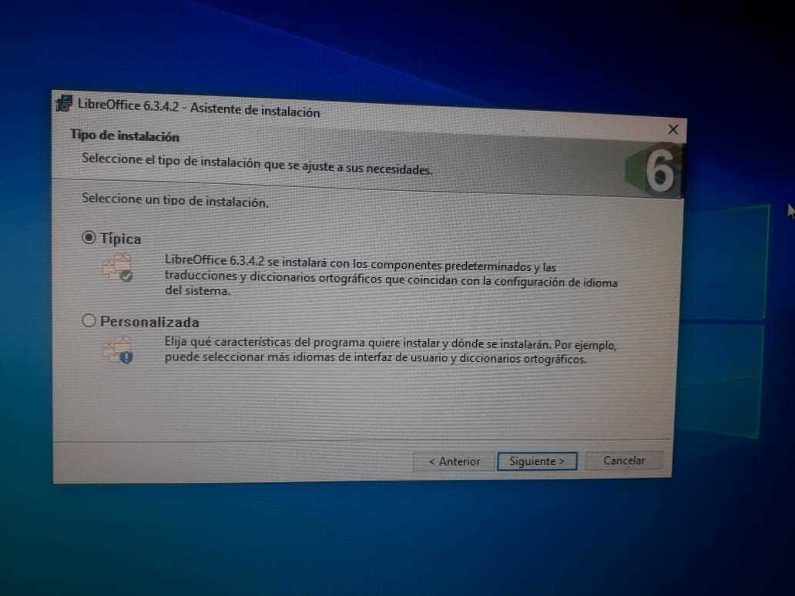
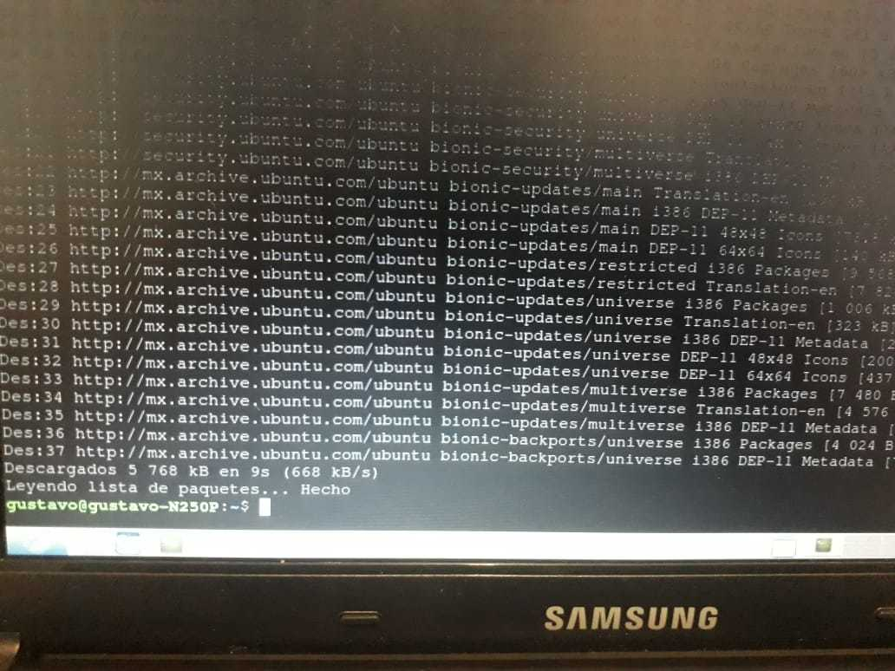

Seminario de Solución de Problemas de Sistemas Operativos de Red
D05
ACTIVIDAD 3

LibreOffice
LibreOffice es un paquete de oficina libre y abierto ideal como una alternativa a los paquetes de paga, LibreOffice posee una interfaz limpia e incluye varias aplicaciones que lo convierten en una opción atractiva en el mercado.
Para conseguir LibreOffice has click
aquí
Instalar en Windows 10
Una vez descargada la versión de LibreOffice que queramos instalar, solo tenemos que ejecutarla para que inicie el instalador gráfico.
Enseguida se nos preguntará el tipo de instalación, en este caso seleccionaremos la "Típica", aunque si deseas instalar otros paquetes es mejor elegir la "Personalizada".
Posteriormente creamos el acceso directo.
Ahora solo queda esperar a que se instale, esto puede tardar algunos minutos dependiendo de las características de tu PC.
Una vez instalado ya podremos usar LibreOffice.
Instalar en Lubuntu
Lo primero que tenemos que hacer es abrir la consola de comandos y usar el comando "sudo add-apt-repository ppa:libreoffice/libreoffice-6-3"
Presionamos la tecla Enter para iniciar la descarga del repositorio.
Ahora escribimos el comando "sudo apt-get update" para actualizar los paquetes.
Por último, usamos el comando "sudo apt-get install libreoffice" para iniciar la instalación.
Una vez completada la instalación podremos usar nuestro nuevo paquete de oficina.